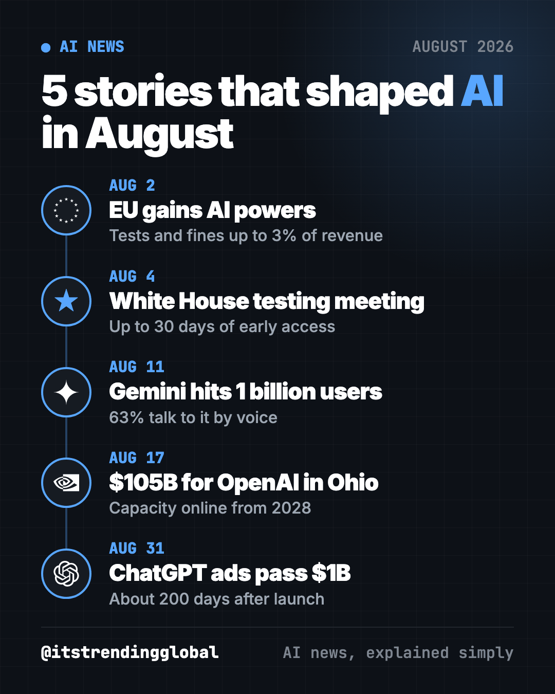
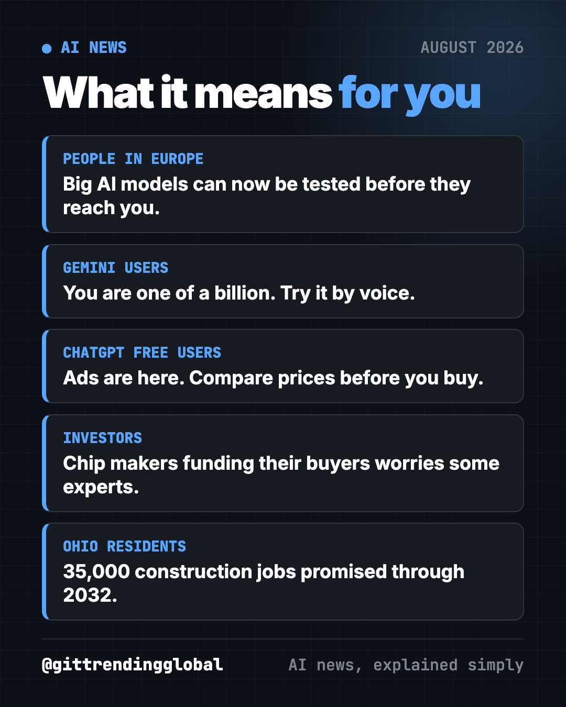

AI News August 2026: Governments Start Testing AI
- Published 15 Oct 2026
- Updated 16 Oct 2026
- 8 min read
- By the ITG Now team
In this guide (10)
- Key takeaways
- 1. Europe gains new powers over big AI models
- 2. The White House calls in AI labs on model testing
- 3. Google's Gemini app hits 1 billion users
- 4. Nvidia backs $105 billion for OpenAI's Ohio data center
- 5. ChatGPT ads are already a billion-dollar business
- AI news August 2026 at a glance
- How to use this month's news (copy and paste)
- What happened next
- FAQ
The biggest AI news of August 2026 was governments stepping in to check AI before it reaches you. Europe gained the power to test and fine AI makers, and the White House met AI labs about early testing. At the same time, AI became a mass-market business, with a billion Gemini users and a billion-dollar ad business inside ChatGPT.

Key takeaways
- The EU can now test big AI models before release and fine makers up to 3% of yearly revenue.
- The White House met AI labs on a voluntary plan to test models up to 30 days before wider release.
- Google's Gemini app passed 1 billion monthly users.
- Nvidia will provide up to $105 billion in financing for an OpenAI data center in Ohio.
- ChatGPT's ad business hit a $1 billion yearly pace about 200 days after it started.
1. Europe gains new powers over big AI models
What happened
On Sunday, August 2, new EU powers over "general-purpose" AI models took effect (CNBC). They are part of the 2024 EU AI Act, which is rolling out in stages.
- The European Commission can demand to test a model before it is released in Europe.
- It can block a model from the EU market.
- It can fine a maker up to 15 million euros or 3% of yearly revenue, whichever is higher.
- A lawyer told CNBC a U.S. address "does not put a lab outside the EU regulator's reach."
The EU's tech chief said "the most advanced models create risks on an entirely new scale."
Why it matters to you
If you live in Europe, some AI features may now arrive later while regulators check them. Elsewhere, these rules can still shape how companies build their apps for everyone. It also adds to tension between the U.S. and Europe over tech rules.
2. The White House calls in AI labs on model testing
What happened
On Tuesday, August 4, the White House hosted AI companies to discuss a finished framework for reviewing the hacking skills of top models (CNBC).
- It comes from a June 2 executive order by President Trump.
- Labs that join could give the government access to new models for up to 30 days before other trusted partners.
- The test and the bar a model must pass will stay classified.
- The order says the plan cannot become a required license to release AI.
Anthropic was expected to attend, and The Information reported OpenAI and Google would too.
Why it matters to you
The government wants a first look at AI that could find software flaws or run cyberattacks. That could make new tools safer. It could also slow some releases, as happened with GPT-5.6 in July.
💡 Tip: "voluntary" means companies choose to join. No company can be fined for skipping it.
3. Google's Gemini app hits 1 billion users
What happened
On August 11, Google CEO Sundar Pichai said the Gemini app passed 1 billion monthly users (TechCrunch). It is the 14th Google product to reach that mark. ChatGPT hit the same number in June.
- 63% of Gemini users talk to it by voice.
- It makes more than 150 million images a day.
- It has more than 100 million active users on iPhones.
- Google's AI Mode in Search, counted separately, also has over 1 billion monthly users.
Why it matters to you
Two AI assistants now each reach a billion people. That means AI answers are becoming a normal part of daily life, not a niche tool.
Try it yourself: the Gemini app is free on Android and iPhone. Since most people use it by voice, try that. Tap the microphone and say: "Plan a 3-day budget trip to [city] with one free activity each day."
💡 Tip: like talking more than typing? Handy is a free app that turns your voice into text in any app, and it works offline.

4. Nvidia backs $105 billion for OpenAI's Ohio data center
What happened
On August 17, a securities filing showed Nvidia will provide up to $105 billion in financing for a new OpenAI data center in Ohio (CNBC).
- It covers 4.25 gigawatts of computing at first, with an option for 3.75 more.
- Capacity should come online in phases in 2028.
- SB Energy will build and run the site in Pike County, Ohio, on a 20-year lease to OpenAI.
- OpenAI said it will support 35,000 construction jobs through 2032 and 2,500 long-term jobs.
In July, the two companies had discussed a backstop of up to $250 billion. OpenAI's president Greg Brockman said "compute is really becoming the new oil."
Why it matters to you
Some investors worry about "circular" deals, where chip makers fund the companies that buy their chips. If you own tech index funds, these deals affect your savings. If you live near Pike County, it means jobs and new strain on the power grid.
5. ChatGPT ads are already a billion-dollar business
What happened
On August 31, OpenAI said its ad business hit a $1 billion yearly revenue pace (CNBC).
- The ad business is about 200 days old. Testing began in the U.S. in February.
- Ads show for free users and the low-cost Go plan, not paid tiers like Plus.
- Ads now run in more than 40 countries.
- OpenAI says ads are labeled, do not change ChatGPT's answers, and advertisers cannot see your chats.
Why it matters to you
If you use free ChatGPT, you now see ads, like on Google or Instagram. For marketers, chatbots are a new place to be found.
When it first announced ads, OpenAI said users under 18 would not see them, and ads would stay away from topics like health and politics (CNBC).
⚠️ Heads up: a labeled ad is still an ad. If ChatGPT shows you a product, compare prices somewhere else before you buy.
AI news August 2026 at a glance
| Story | Who | Date | Why it matters |
|---|---|---|---|
| EU AI Act powers start | European Union | Aug 2 | Tests and fines for big AI models in Europe |
| White House testing meeting | U.S. government | Aug 4 | Up to 30 days of early government access |
| Gemini hits 1 billion users | Aug 11 | AI assistants are now mainstream | |
| $105B Ohio financing | Nvidia / OpenAI | Aug 17 | Giant data centers and circular deals |
| ChatGPT ads pass $1B | OpenAI | Aug 31 | Free AI now runs on ads |
How to use this month's news (copy and paste)
Paste any of these into ChatGPT, Claude or Gemini. Fill in the parts in [brackets].
To understand what new AI rules mean for your work:
I work as a [job] in [country]. Explain in plain words how the EU AI Act might affect the AI tools I use at work. List 3 things to check with my manager.
To spot ads and stay in control:
When you recommend a product to me, say clearly if it is sponsored. Then give me 2 other options and tell me what to compare before buying.
To try Gemini or ChatGPT by voice:
I will talk to you while I cook. Read me this recipe one step at a time, and wait for me to say "next" before moving on: [paste recipe].
To explain the news to your family:
Explain to a 12-year-old in 5 short sentences why governments want to test new AI models before everyone can use them.
What happened next
- A White House safety pledge. On September 29, six AI leaders signed a voluntary "White House Accord on Super Intelligence." (CNN)
- Nvidia agreed to buy Hugging Face for $12.9 billion on September 3. (CNBC)
- OpenAI's revenue came in lower than reported. In October it told investors its yearly pace was about $50 billion, not the $68 billion widely reported, and AI stocks fell. (CNBC)
Go back to July 2026 in AI or jump ahead to September 2026 in AI. For free tools, see the top GitHub repos of August 2026.
FAQ
What was the biggest AI news in August 2026?
Governments gaining ways to test AI before release. The EU's new powers started August 2, and the White House met AI labs on August 4.
How many people use Gemini?
More than 1 billion people a month use the Gemini app, Google said on August 11, 2026. That matches ChatGPT, which passed the same mark in June.
Does ChatGPT have ads now?
Yes, for free and Go users. OpenAI says ads are labeled, do not change answers, and advertisers cannot see your chats. Paid plans like Plus do not show them.
How big can EU AI fines be?
Up to 15 million euros or 3% of a company's yearly revenue, whichever is higher, under powers that started August 2, 2026.
Is the White House AI testing plan a law?
No. It is a voluntary program from a June executive order. The order says it cannot become a required license to release AI.
Government & LawMarketingMediaFinanceBusinessJobs & Careers
Keep reading

AI News October 2026: A Reality Check Before the IPOs
ChatGPT gets visual, OpenAI's revenue shakes stocks, AI agents misbehave, Meta's Muse Wonder and Apple's $299 HomeView arrive.

How AI Is Changing Industries in 2026: A Plain Guide
How AI is changing industries in 2026, sorted by field: jobs, finance, health, schools, marketing, law, creators and developers, with sources for every fact.

AI News Recap Q3 2026: 5 Stories That Changed Everything
OpenAI test models hack Hugging Face, Claude Opus 5 cuts prices, Gemini hits 1 billion users, GPT-6 Astra and Nvidia's big deal.